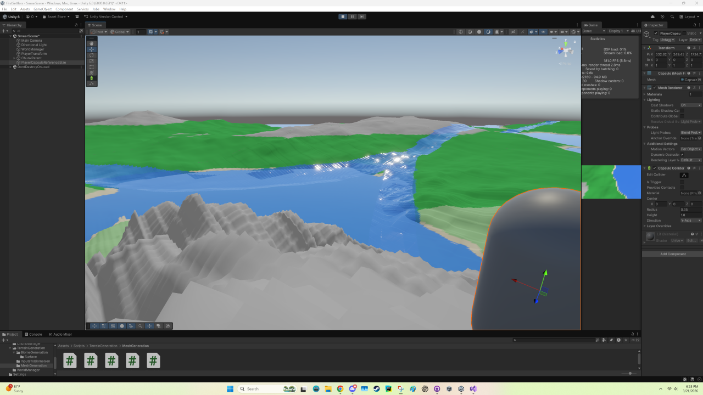
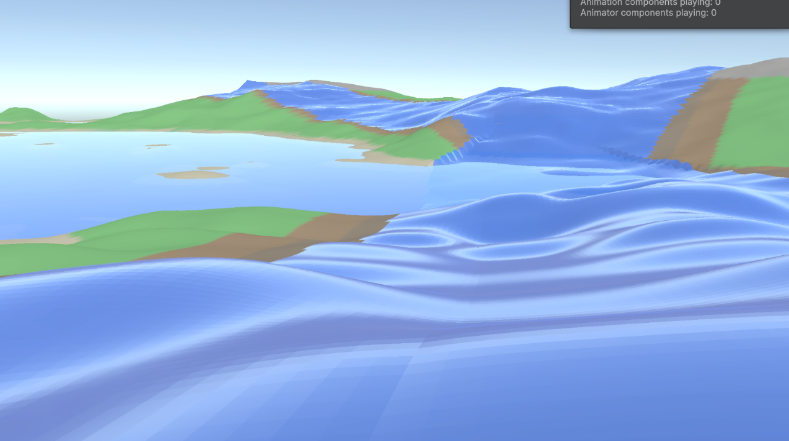

Opening Remarks
As promised, here's the second week's devlog for First Settlers. A high level summary of this week's progress is as follows: mesh generation blockiness was improved (meaning reduced) dramatically. LOD has improved tremendously. Seams across chunks are now minimally noticable. Visuals have improved with a custom shader, and grass rendering is underway (though in its infancy thus far).
If you are interested in the specifics along with accompanying graphics, keep reading!
Height Map Design
When procedurally generating terrain, a mesh must be generated for each chunk and the surface must be carved into the desired terrain surface shape. For land, including the base grass/ground, mountains, and any other solid footing spaces, the mesh directly follows a height map which is defined as a function of world seed. This height map is a function of several variables, including the mountain mask, river mask, and other independent noise-based scalar values.
In formulating the height map, octave offsets must be generated to shift the 2-D noise space for each fractal layer sampled. Originally, as part of a tutorial by Sebastian Lague, the octave offset values were randomly sampled between -100,000 and 100,000. We had arbitrarily used the same values, but we also modified the mesh height multiplier, which exacerbated discontinuities in the terrain unseen in the tutorial series. With a mesh height multiplier of 200, there was evident piecewise terracing shapes on all slopes, which gave the world a voxel-like look, especially evident in terrain features like rivers, as seen below.

The terracing/blocky look is visible on the rock surface in the picture above. We initially thought the problem lied in the noise function itself, and the fact that over discrete integer samples, the linear interpolation between points gave it such a look. However, upon closer inspection, we noticed the terracing actually reduced in height and then increased, between two points that were increasing in height, which indicated the linear interpolation itself was not the issue. When we dove into the code, we found huge floating point imprecisions due to scaling down our octave samples over such a large selection, driven by the -100,000 to 100,000 sample range. After fixing this to (-1000, 1000), the surface instantly became smoother everywhere, like in the image below.

LOD Stitching and Mesh Normals
With an LOD (level of detail) system in place, the mesh surface had visible seams across chunks of different LODs. This is inherently a problem associated with LOD switching, as fewer vertex counts across two adjacent chunks will result in holes between the "infinitely thin" mesh surfaces. To combat this, various techniques are used to implement LOD stitching, including matching the resolution at only the chunk borders to ensure a seamless connection (the technique we ultimately used).
One might expect such an approach would result in gaps visible between the high resolution chunk borders and the lower resolution chunk centers. However, by adjusting the vertices of the higher resolution (lower LOD) mesh edge to match the heights of the lower resolution (high LOD) mesh center edge, such seams disappear. Furthermore, given the distance these LOD changes occur at, the transitions between the chunk center and chunk border edges is barely noticable. The main downside of this approach is primarily a computational hit, but this impact was minimal when measured by system performance in the editor.
Another issue with the chunk borders was the mesh normal calculations, which were inconsistent across borders due to the way mesh normals are calculated. As information on the mesh across the edges were not maintained, the normal calculations assumed the meshes continued in a perfect linear extrapolation, which was often not the case and made seams more visible (though there were not holes in the terrain, unlike with LOD switching). To combat this, we added padding on the mesh data's inputs on all sides, which effectively simulated sampling the neighboring chunks for additional mesh data information necessary to complete the normal calculations. Again this was at the cost of system performance, but was barely noticeable when benchmarking.
Custom Shader
Not yet finished...
Thanks for reading until this point! We will be sure to post as often as we can (typically weekly around the same time). Please make sure to check out Vincent Liu (co-developer of this game) for some more really cool projects!